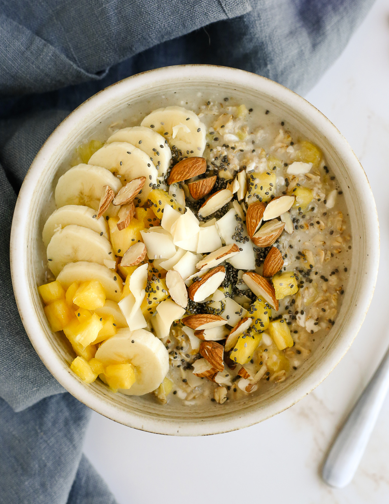

Overnight Pineapple-Banana Oats
Ingredients
- 1/2 cup quick or rolled oats
- 1/2 cup whole milk or milk of your choice
- 1/2 tbsp brown sugar or sweetner of your choice and tasting
- 1/4 to 1/2 cup chopped pineapple, fresh or canned
- 1/2 banana, sliced thin
- 1 tbsp sliced or slivered almonds, optional
- 1 to 2 tbsp toasted coconut, optional
- 1/2 tbsp chia seeds, optional
Method
Step 1
Prepare all the ingredients and pick a container to put in a fridge.
Step 2
Add the Oats, Milk to the container and stir in your desired sweetner.
Step 3
Fridge your oats and leave overnight or leave in the fridge for atleast 4 to 5 hours to chill.
Step 4
After chilling in the fridge add desired fruits to your Oats and enjoy!